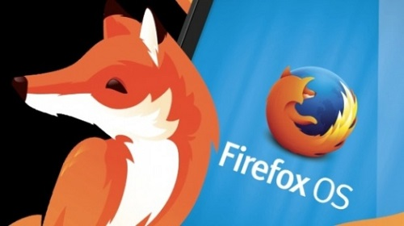
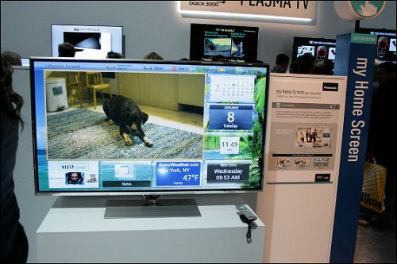

Panasonic 電視將預載 Firefox OS

◎本文原載 Linux Pilot，原文章連結按此。
Panasonic 和研發開源瀏覽器 Firefox 的 Mozilla 基金會宣布合作，未來能在 Panasonic 的智慧型電視上，運行的作業系統將會是開源的 Firefox OS。

Panasonic AVC Networks 電視事業部部長楠見雄規表示，一直以來 Panasonic 智慧型電視上的功能都用自家技術開發，合作後 Panasonic 將對部分電視功能改以 HTML5 架構驅動，同時提供 WebAPI 讓開發者得以利用產品的硬體效能，目的是加強旗下品牌進一步融入網路世界，吸引更多開發者為下一代的智慧型電視開發新功能，令 HTML5 成為次世代電視應用程式主流開發架構的態勢愈趨明朗。

Firefox OS 是 Mozilla 在 2013 下半年公開的開源作業系統，其應用程式主要以 HTML5 和 JavaScript 語法編寫。他表示在次世代智慧型電視裡，像選單和數位頻道指南 (EPG) 等功能，都將改用 HTML5 撰寫，讓開發者得以更容易為智慧型手機或平板，設計 Apps 來與電視互動，實現像利用手機遙控家中電視、或利用雲端讓網路和傳統媒體內容相互共享。Firefox OS 的特點是完全的開源，比 Android 的「絕大部分開源」更加徹底，保證完全不會有 NSA 等美國政府機構加入有問題的程式碼。
您也許有興趣閱讀以下文章:
- Panasonic 與 NEC 公開 9 款新 LiMo 手機 - 2009-08-13